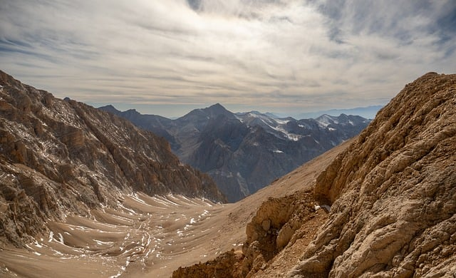

Altos de una cordillera:

Esta imagen muestra un majestuoso paisaje montañoso al atardecer. Los picos escarpados dominan el horizonte, con sus laderas rocosas y valles profundos, algunos de ellos cubiertos de nieve que se aferra a las grietas. Lo más curioso es el cielo, que está teñido de un suave color rosado y naranja por el sol poniente, creando un contraste dramático y sereno con las sombras frías de las montañas. La escena evoca una sensación de inmensidad y soledad.